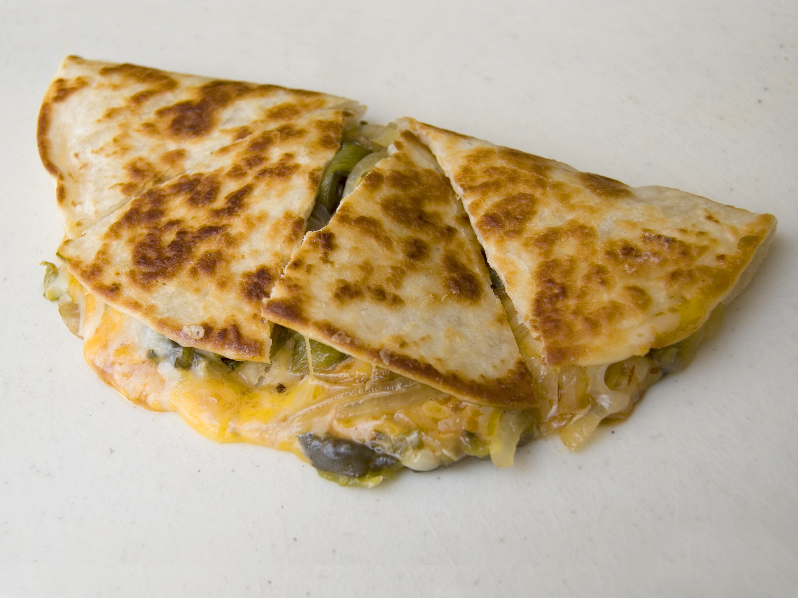

Quesadilla

Spicy cream cheese, pulled pork, and veggies make quick and tasty quesadillas.
Ingredients
- 4 (8 inch) flour tortillas
- ½ cup PHILADELPHIA Spicy Jalapeno Cream Cheese Spread
- 1 (11.5 ounce) package OSCAR MAYER CARVING BOARD Sweet & Spicy Pulled Pork
- ½ cup frozen corn, thawed
- ½ cup chopped red pepper
- ½ cup tomatillo salsa
Steps
- Spread tortillas evenly with cream cheese; top half of each of tortilla with remaining ingredients. Fold tortillas in half
- Heat large skillet sprayed with cooking spray on medium heat. Add 1 quesadilla; cook 4 to 5 min. or until golden brown on both sides, turning after 2 to 3 min. Repeat with remaining quesadilla. Cut into wedges. Serve with salsa
Home